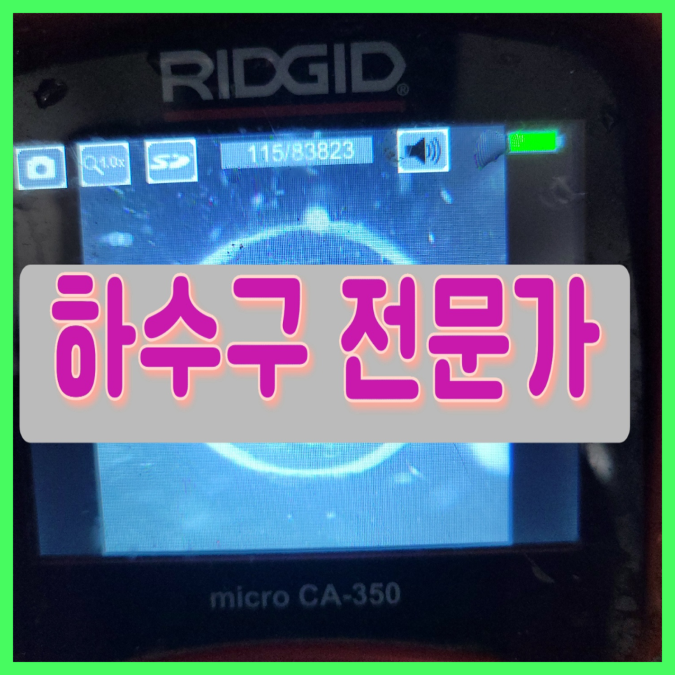
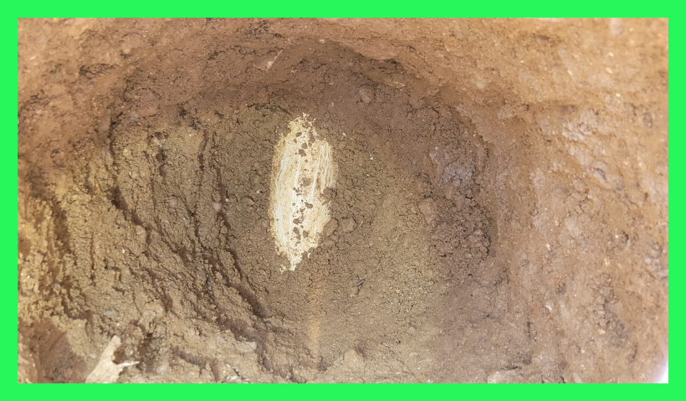
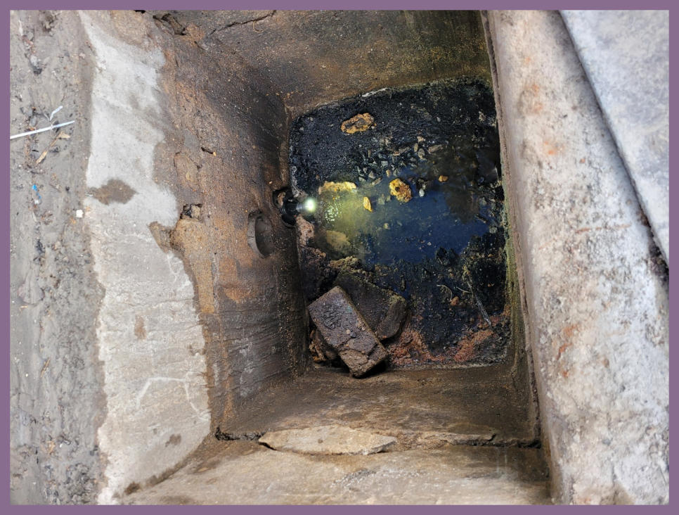
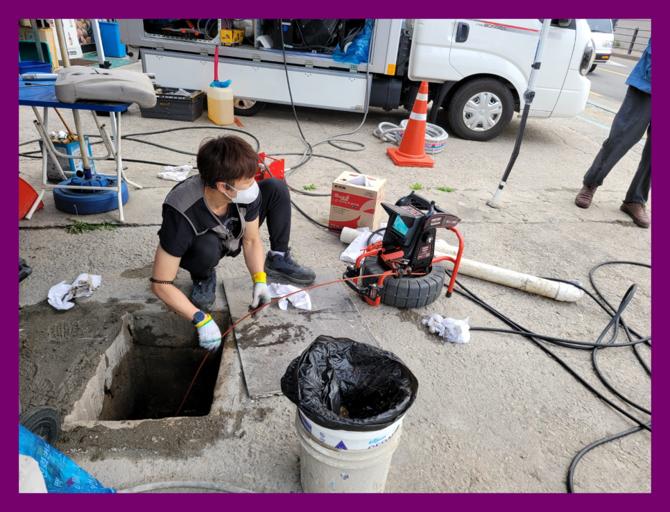
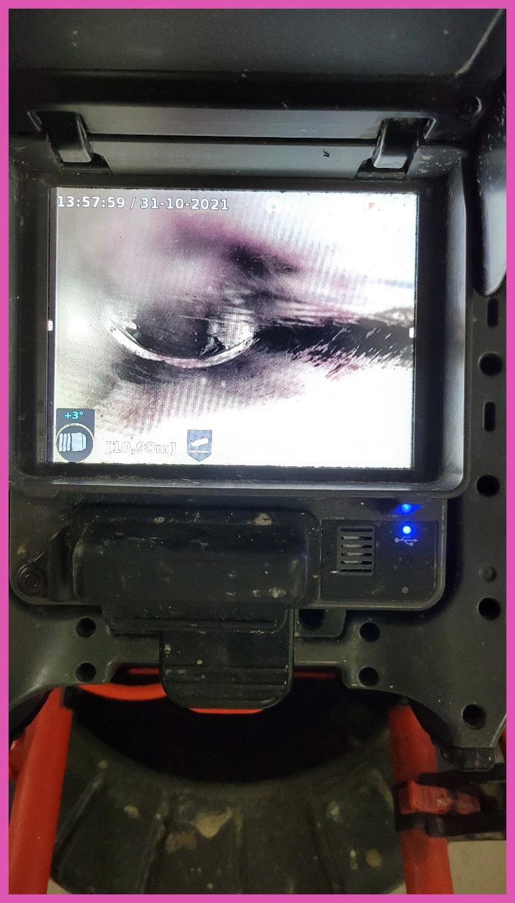
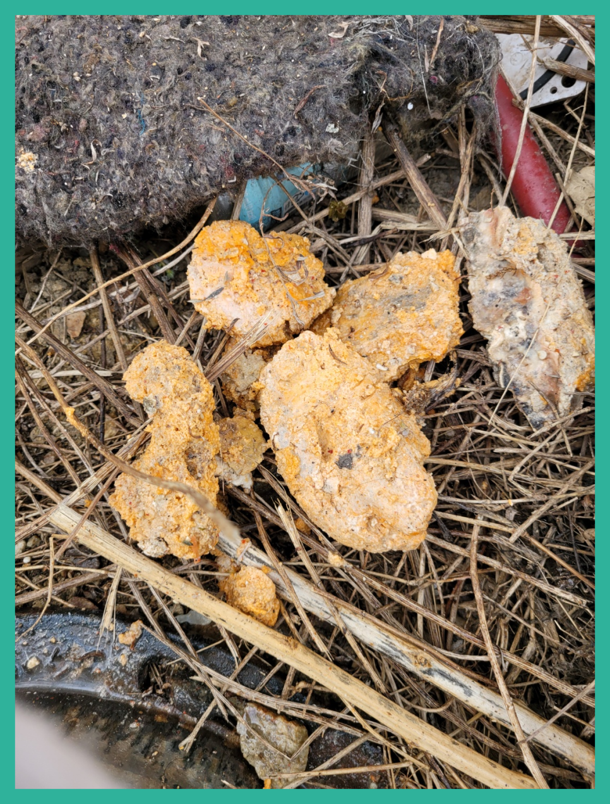
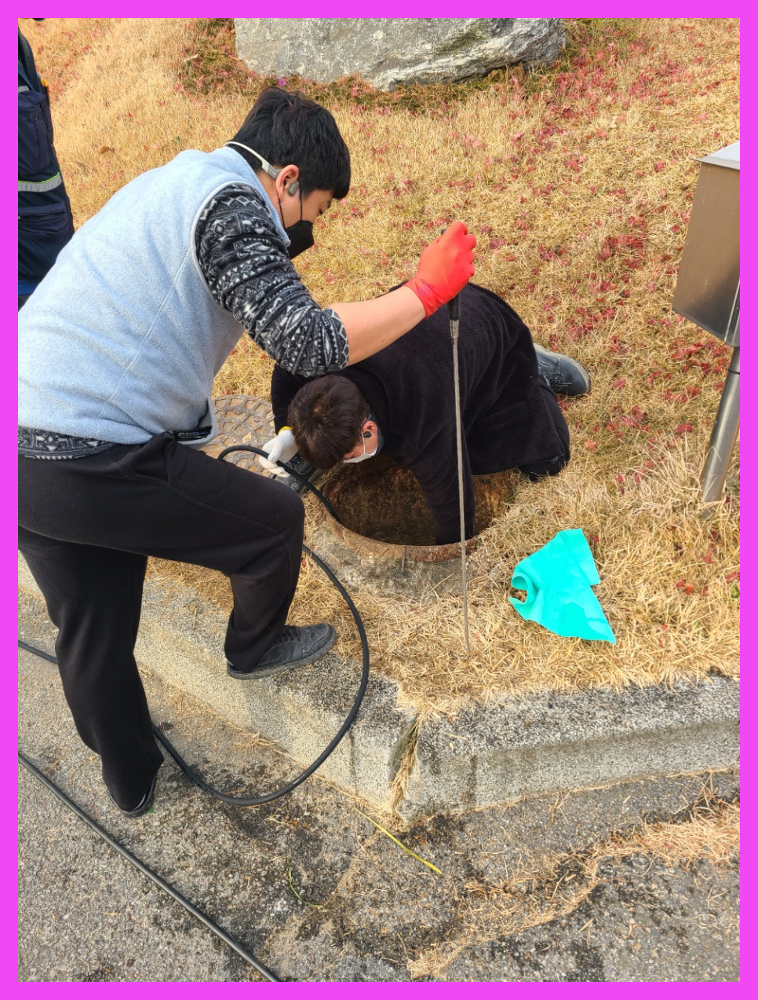

🏠 오산 궐동 하수구막힘역류뚫음 세마동 하수구뚫는업체
오산 세마동 하수구막힘 전문 시공 후기

📋 작업 개요
- 위치: 오산 세마동, 세마동, 오산
- 서비스 유형: 하수구막힘, 배관막힘, 누수수리, 역류해결, 뚫는업체, 배관청소, 고압세척
- 작업 일시: 2023. 9. 13. 19:45
- 업체명: 하수구수사대 (010-5615-2118)
🔍 문제 상황
물을 사용하는 장소라면 배출구가 설치되어 있는 모습을 확인할수 있을 것입니다. 배출구는 사용한 물이 흘러나가는 공간으로 다양한 배관으로 연결됩니다.
아무래도 전문가를 불러야 하는 것 같기에 신속하게 출장이 되는 주변 전문업체에 전화해서 퇴수구 뚫는 작업을 요청하셨답니다.
오산 궐동 하수구막힘역류뚫음 세마동 하수구뚫는업체
만약에 작업을 했는데 배수구완벽하게 통수가 안되었을 경우 생활하다보면 또 똑같은 현상이 발생하여 스트레스를 받게 되고 그때서야 추가작업을 의뢰해도 거절하는 곳이 많기 때문에 한번 할때 제대로된 업체에 의뢰하여 확실하게 하는것이 좋아요.
무조건 저렴한 업체를 이용하시는게 정답이 아닌 이유가 바로 이것입니다. 퇴수구 대부분 가격을 미리 정해놓고 출동하는곳들은 어떤 상황이든 간에 같은 작업만 해주고 철수 합니다. 받은 돈 만큼만 일하기 때문입니다.

🔎 원인 분석
💡 전문가 진단: 오산 궐동 하수구막힘역류뚫음 세마동 하수구뚫는업체
비용에 대해 궁금하실 경우 현장에 출동한 후 더 자세하게 상담을 받아 보실 수 있도록 현장 방문 상담 서비스도 진행하고 있어요. 하수 복잡하게 되어 있는 곳이라면 이렇게 방문을 해서 확인해야지만 정확한 비용을 알려 드릴 수 있어요.
인터넷에서 쉽게 얻을 수 있는 정보들은 대부분 미비한 효과에서만 그치고 근본적인 원인은 해결해 주지 못합니다. 퇴수구막힘의 정도가 심하지 않을 땐 괜찮을 수도 있겠으나 처음부터 천문가가 필요한 상황이었다면 괜한 비용 낭비만 하신 격이 될 수 있습니다.
사후서비스 까지 확실하게 책임진다는마인드라면 기본가격을 문의해 보세요. 기본가격은 대부분의 업체가 비슷한 선일 텐데요. 기본작업 후 퇴수구 배관내시경으로 여러분의 배관을 검수했을 때 만약 막힘 정도가 심각한 상태라면 추가작업이 필요할 수도 있습니다.
한 번만의 작업으로 인해서 몇 개월혹은 몇 년 이상 하수구가 막히는 일이 없도록 관리할 수 있기 때문에 많은 분들이 퇴수구에 정기적인 작업으로 쾌적한 유지를 하고있습니다.
처음에 석션기를 이용해서 위에 고여있는 물을 빼주는 작업을 하였는데요 어느 정도 제거를 하고 나니까 내부를 확인해 볼 수 있는 상태가 되었습니다.퇴수구막힘 역류 해결 이번 현장의 경우에는 식당 내부 배관으로 흘러들어 가게 되는 이물질들이 문제가 되는 상황이었습니다.

🔧 작업 과정
심화돼버리면 퇴수구막힘은 기본이고 역으로 올라오는것이 걱정되실텐데요 이정도로만 그치진않죠. 혹여라도 악화돼버린다면 물들이 집안으로 흘러들기도합니다.또다른문제는 어떤물도 사용할수가없는것이겠죠
이와같은문제로인해 꾸준히케어 하셔야해요.하지만이것과는 다르게 하시는것조차 망설이시는데요. 하수 깊숙한곳까지 직접보는게힘든 상황이원인이랍니다.
대부분은 심하게막힌것이 아니면 기본금액으로 수리할수있지만 낙후된하수도이거나 엄청나게깊숙한곳까지 찌꺼기가쌓여있다면 상황이복잡해지기때문에 추가금액이 발생됩니다
전문가로서 하수구와관련된 대부분을하기에 각종하수 물샘증상을 발견하셨다면 문의를넣어주시면 천천히듣고 빨리가드리고 문제를없애드리겠습니다
살살쓰신다고해도 쭉사용하시다보면 깊은곳까지 쌓여서 퇴수구청소도구를 쓰시거나 매일조심스럽게 하는것이 번거롭다고 느끼실겁니다.밤늦게집에 도착하시면 생각조차 안나게돼요
엄청난 큰 돌이 끼어있었는데 완벽히 제거된 것은 물론이고 벽면에 붙어있던 누런 때까지 사라진 모습에 놀라신 고객님이 감탄을 하셨는데요. 고압세척기의 힘이 아닌 장비 컨트롤만으로 일일이 이물질을 제거해낸 저희들의 솜씨를 직접 확인해 보실 수 있습니다.
션 작업은 떨어진 석회들을 흡입해서 빼내는 작업으로 석션기를 사용해서 이물질들을 다 제거하고 나서 하수구 안을 살펴봅니다. 배출구배관 안을 보니 작업을 진행하기 전과 후의 모습이 완전히 다르며 전혀 다른 배관이라는 생각이 들 정도로 깔끔해진 걸 확인할 수 있었습니다.
>


✅ 작업 완료
공휴일에 막히기라도 하면 대다수의 분들이 발등에 불이 떨어져 배출구 안에 이상한 물건들을 넣고 휘젓는다거나 빠뜨려 버리시는 등의 예측 불가능한 행동으로 상황을 더욱 악화시켜 버리는 경우가 많습니다.
내가 하지 못하는 일이라고 한다면 전문가를 불러서 처리하시기 바랍니다. 그게 정답임을 잊지 마시기 바라며 지금 막혀서 당황하셨다면 저희가 바로 달려가도록 하겠습니다.
<동영상2.MP4,오산하수구막힘>




⚠️ 베란다 누수 및 방수 관리 방법
- ✅ 비가 많이 올 때 창틀 주변이나 아래층 천장에 얼룩이 생기는지 정기적으로 확인해 보세요.
- ✅ 우수관 주변 실리콘 마감이 들뜨거나 깨진 틈새가 있는지 손상 여부를 수시로 체크하세요.
- ✅ 베란다 바닥 타일의 줄눈(메지)이 소실되면 그 틈으로 물이 침투하여 누수가 유발됩니다.
- ✅ 누수 의심 증상 발견 시 방치하면 아래층 손실이 커지므로 즉시 전문가의 진단을 받으십시오.
💡 핵심 정리
- 확실한 장비 작업(내시경 점검 및 샤프트 스케일링)으로 원인을 뿌리 뽑습니다.
- 작업 후 1년 이내에 동일한 부위 재발 시 100% 무상 A/S 서비스를 보장합니다.
- 서울 · 경기 · 인천 전 지역에 24시간 언제든 긴급 출동할 수 있도록 항시 대기 중입니다.
❓ 자주 묻는 질문 (FAQ)
🚨 오산 세마동 하수구막힘 문제로 고민이신가요?
정확한 원인 진단과 확실한 시공으로 재발 없는 해결을 약속드립니다.
24시간 긴급 출동 | 서울 · 경기 · 인천 전지역 | 1년 내 재발 시 무상 A/S